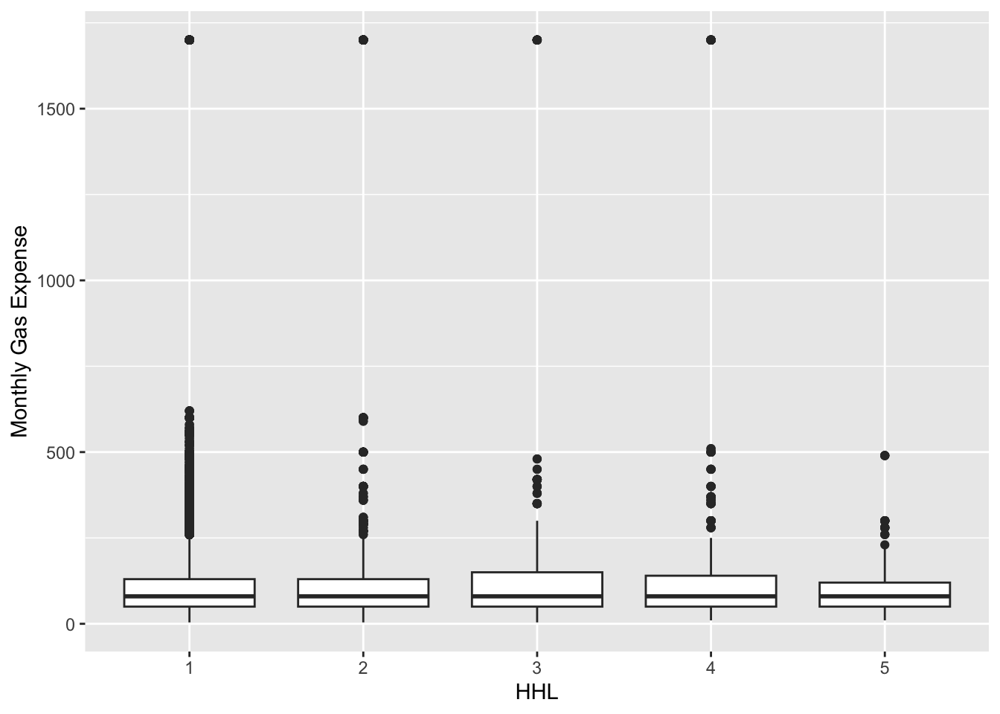
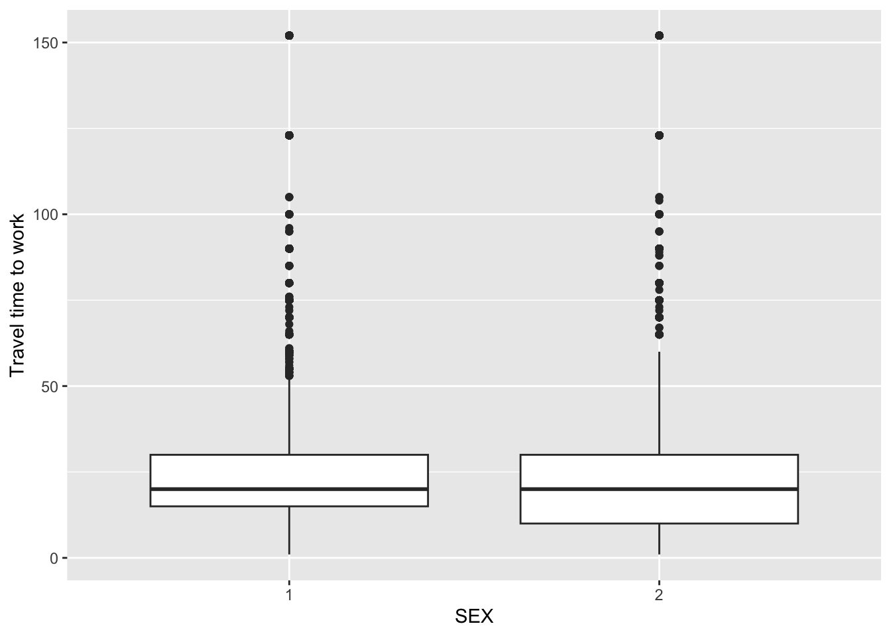

# a simple API call
URL_ids <- "https://api.census.gov/data/2023/acs/acs5/pums?get=SEX,PWGTP,MAR&for=state:1&SCHL=24"
id_info <- httr::GET(URL_ids)
#str(id_info)
parsed <-fromJSON(rawToChar(id_info$content))
# use first row as columns headers
PUMS20235Y <- as_tibble(parsed[-1, ], .name_repair = ~ parsed[1, ])
PUMS20235YST 558 Project 1
Objectives
The goals of this project are to:
Write a function to query an API with user-selected data, process and manipulate the data retrieved, and return it as a tibble
Write generic functions to summarize and plot the data
Investigate something interesting from the data using the API, summarize, and plot functions.
Data
We are using the Public Use Microdata Sample (PUMS) Census API. According to the US Census Bureau, the PUMS files are a broad set of records from individuals and dwellings, ranging from years 2005 to 2019 and 2021 to 2022. Variables used in this project include:
Numeric Variables
PWGTP (PUMS Person Weight)
AGEP (Age)
GASP (Gas cost, monthly)
GRPIP (Gross rent as a percentage of household income, past 12 months)
JWAP (Time of arrival at work - hour and minute)
JWDP (Time of departure for work - hour and minute)
JWMNP (Travel time to work)
Categorical Variables
FER (Gave birth to child within the past 12 months)
HHL (Household language)
HISPEED (Broadband/high speed Internet service)
JWTRNS (Means of transportation to work)
SCH (School enrollment)
SCHL (Educational attainment)
SEX (Sex)
API Function
The purpose of the first function is to query the API with user-selected data, process and manipulate the data retrieved, and return it as a tibble. The function was constructed step-by-step as follows:
Steps to build API Function
- Querying the API with a given example URL using the usual process for querying an API
- Writing a helper function to take what is returned by GET() in the API query and making it into a tibble
URL_ids <- "https://api.census.gov/data/2023/acs/acs5/pums?get=SEX,PWGTP,MAR&for=state:1&SCHL=24"
id_info <- httr::GET(URL_ids)
create_tibble_helper <- function(id_info) {
parsed <-fromJSON(rawToChar(id_info$content))
return(as_tibble(parsed[-1, ], .name_repair = ~ parsed[1, ]))
}
create_tibble_helper(id_info)- Writing a function to query the API with user-selected survey year (default value of 2022), checking to ensure that the user-selected year is valid (between 2010 and 2022)
# function that builds API URL with user input for year
API_URL_builder <- function(year = 2022){
#code that takes user inputs and concatenates them into a string that becomes the URL, year must be between 2010 - 2022 and cannot be a decimal
if ( year < 2010 | year > 2022 | year %% 1 != 0){
stop("Please enter a valid year between 2010 and 2022.")
return(NA)
}
API_URL <- paste0("https://api.census.gov/data/", year, "/acs/acs1/pums?get=SEX,PWGTP,MAR&for=state:1" )
return(API_URL)
}
API_URL_builder(2015)Updating the API function with user-selected numerical variables entered as a vector (user options: AGEP, GASP, GRPIP, JWAP(time), JWDP (time), and JWMNP); default values: AGEP, PWGTP; PWGTP always returned), checking to ensure that user-entered variables are valid
Updating the API function with user-selected categorical variables entered as a vector (user options: FER, HHL, HISPEED, JWTRNS, SCH, SCHL, and SEX; default value: SEX), checking to ensure that user-entered variables are valid
# function that builds API URL with user input for numeric variables
API_Year_NumericVar_Builder <- function(year = 2022,
numvars = "AGEP",
catvars = "SEX"){
if ( year < 2010 | year > 2022 | year %% 1 != 0){
stop("Please enter a valid year between 2010 and 2022.")
#return(NA)
}
# add numeric and categorical variable user options
var_options <- c("AGEP","GASP","GRPIP","JWAP","JWDP","JWMNP","SEX", "FER", "HHL", "HISPEED", "JWTRNS", "SCH", "SCHL")
#make sure all user choices are in allowed list of options
if (!all(numvars %in% var_options))
stop("Please enter a valid numeric variable.")
if (length(numvars) < 1)
stop("Include at least one numeric variable besides PWGTP.")
numvars_comb <- paste(numvars, collapse = ",")
# add categorical variable user options
#make sure all user choices are in allowed list of options
if (!all(catvars %in% var_options))
stop("Please enter a valid categorical variable.")
catvars_comb <- paste(catvars, collapse = ",")
#numvars = c("AGEP", "GASP", "GRPIP", "JWAP", "JWDP", "JWMNP")
API_URL <- paste0("https://api.census.gov/data/", year, "/acs/acs1/pums?get=PWGTP,",numvars_comb,",",catvars_comb,"&for=state:1" )
return(API_URL)
}
#API_Year_NumericVar_Builder(2015, numvars = c("AGEP","GASP","GRPIP"), catvars = c("FER", "HHL"))- Updating the API function with user-selected geography levels (user options: all, region, division, state; default value: all), checking to ensure that user-entered levels are valid
# function that builds API URL with user input for numeric variables
API_Year_NumericVar_Builder <- function(year = 2022,
numvars = "AGEP",
catvars = "SEX"){
if ( year < 2010 | year > 2022 | year %% 1 != 0){
stop("Please enter a valid year between 2010 and 2022.")
#return(NA)
}
# add numeric and categorical variable user options
var_options <- c("AGEP","GASP","GRPIP","JWAP","JWDP","JWMNP","SEX", "FER", "HHL", "HISPEED", "JWTRNS", "SCH", "SCHL")
#make sure all user choices are in allowed list of options
if (!all(numvars %in% var_options))
stop("Please enter a valid numeric variable.")
if (length(numvars) < 1)
stop("Include at least one numeric variable besides PWGTP.")
numvars_comb <- paste(numvars, collapse = ",")
# add categorical variable user options
#make sure all user choices are in allowed list of options
if (!all(catvars %in% var_options))
stop("Please enter a valid categorical variable.")
catvars_comb <- paste(catvars, collapse = ",")
#numvars = c("AGEP", "GASP", "GRPIP", "JWAP", "JWDP", "JWMNP")
API_URL <- paste0("https://api.census.gov/data/", year, "/acs/acs1/pums?get=PWGTP,",numvars_comb,",",catvars_comb,"&for=state:1" )
return(API_URL)
}
#API_Year_NumericVar_Builder(2015, numvars = c("AGEP","GASP","GRPIP"), catvars = c("FER", "HHL"))- Updating the API function with optional, user-selected geographic subsetting for specific regions, divisions, or states (user options for regions: 1 to 4, *; default region value *) (user options for divisions: 1 to 9, *; default division value *) (user options for states: 01 to 02, 04 to 06, 08 to 13, 15 to 42, 44 to 51, 53 to 56, *; default state value 08 (Colorado)), checking for valid inputs and combinations of inputs
# function that builds API URL with user input for year and numeric, categorical, and geographic variable options
API_URL_Builder <- function(year = 2022,
numvars = "AGEP",
catvars = "SEX",
geo_level = "state",
geo_subset = "08"){
if ( year < 2010 | year > 2022 | year %% 1 != 0){
stop("Please enter a valid year between 2010 and 2022.")
#return(NA)
}
# add numeric and categorical variable user options
var_options <- c("AGEP","GASP","GRPIP","JWAP","JWDP","JWMNP","SEX", "FER", "HHL", "HISPEED", "JWTRNS", "SCH", "SCHL")
#make sure all user choices are in allowed list of options
if (!all(numvars %in% var_options))
stop("Please enter a valid numeric variable.")
if (length(numvars) < 1)
stop("Include at least one numeric variable besides PWGTP.")
numvars_comb <- paste(numvars, collapse = ",")
# add categorical variable user options
# make sure all user choices are in allowed list of options
if (!all(catvars %in% var_options))
stop("Please enter a valid categorical variable.")
catvars_comb <- paste(catvars, collapse = ",")
# add Geographic user options
# allowable region, division, and state codes
region_code_options <-c("1","2","3","4", "*")
division_code_options <- c("1","2","3","4","5","6","7","8","9", "*")
state_code_options <- c("01","49","21","26","29","32","34","08","51","39",
"02","46","04","06","55","15","22","30","47","48",
"09","50","53","17","20","35","36","10","11","12",
"56","16","25","27","42","45","13","23","24","28",
"37","41","05","19","31","33","44","54","18","38",
"40", "*")
#PR 72 not included
#specify the geo_levels, with default of all
geo_level_options <- c("all", "region", "division", "state")
# Check that the value specified by the user is one of the above values
if (!all(geo_level %in% geo_level_options))
stop("Please enter a valid Geography.")
# if geo_subset is missing, set defaults
if (missing(geo_subset) | length(geo_subset) == 0 | geo_subset == "") {
if (geo_level == "state") geo_subset <- "08"
if (geo_level == "region") geo_subset <- "*"
if (geo_level == "division") geo_subset <- "*"
}
if (geo_level == "region" && !geo_subset %in% region_code_options) {
stop("Not a valid Region code. Region code must be 1–4")
}
if (geo_level == "division" && !geo_subset %in% division_code_options) {
stop("Not a valid Division code. Division code must be 1–9")
}
if (geo_level == "state" && !geo_subset %in% state_code_options) {
stop("Not a valid State code")
}
# build URL
API_URL <- paste0("https://api.census.gov/data/", year, "/acs/acs1/pums?get=PWGTP,",numvars_comb,",",catvars_comb,"&for=",geo_level, ":", geo_subset)
return(API_URL)
}Finalizing the API Builder Function
Finalizing our API builder involved the following two tasks:
Writing an additional function largely based on functionality of the first function. The additional function, which we refer to as Multi-Year API Builder, allows user specification of multiple years of survey data entered as a vector in addition to all options enumerated above, calling above single-year function as needed and combining data into a single tibble with year variable added
Developing two helper functions to (1) get PUMS metadata variables for user-selected years, and (2) join metadata labels to downloaded PUMS data to extract label values for dates
Updating API function to clean/wrangle the data set, assigning data types of numerical, categorical, and time as appropriate, using PUMS metadata for parsing time
# load libraries
library(httr)
library(jsonlite)
library(dplyr)
Attaching package: 'dplyr'The following objects are masked from 'package:stats':
filter, lagThe following objects are masked from 'package:base':
intersect, setdiff, setequal, unionlibrary(tibble)
library(stringr)
library(lubridate)
Attaching package: 'lubridate'The following objects are masked from 'package:base':
date, intersect, setdiff, union#_________________________________
# helper function: parse GET to create tibble with header row as names
create_tibble_helper <- function(id_info) {
parsed <- fromJSON(rawToChar(id_info$content))
as_tibble(parsed[-1, ], .name_repair = ~ parsed[1, ])
}
#_________________________________
# helper function for PUMS metadata - builds variables.json URL from user inputs
get_pums_metadata <- function(year = 2022) {
metadata_url <- paste0("https://api.census.gov/data/", year, "/acs/acs1/pums/variables.json")
metadata_json_url <- httr::GET(metadata_url)
fromJSON(rawToChar(metadata_json_url$content))
}
#_________________________________
# helper function: get variable ids for joining metadata to data
# input is json metadata and variable
build_value_lookup <- function(metadata, var) {
v <- metadata$variables[[var]]
# skip if not coded values for numeric vars like AGEP
if (is.null(v) || is.null(v$values) || is.null(v$values$item)) return(NULL)
# make tibble with json metadata column names
lookup <- tibble(
code = names(v$values$item),
label = unlist(v$values$item, use.names = FALSE)
)
# rename added label columns
names(lookup) <- c(var, paste0(var, "_label"))
lookup
}
#_______________________________________
# function to join labels to categorical variables in df
label_categoricals <- function(df, metadata, catvars) {
if (missing(catvars) || is.null(catvars) || length(catvars) == 0) return(df)
# only keep categorical vars that are actually in df
vars <- intersect(catvars, names(df))
if (length(vars) == 0) return(df)
out <- df
for (var in vars) {
# build lookup for this var
lk <- build_value_lookup(metadata, var) # <- note: _simple
if (is.null(lk)) next
# ensure key types match
out[[var]] <- as.character(out[[var]])
lk[[var]] <- as.character(lk[[var]])
# pad time codes to 3 chars if needed
if (var %in% c("JWAP","JWDP")) {
out[[var]] <- stringr::str_pad(out[[var]], 3, pad = "0")
lk[[var]] <- stringr::str_pad(lk[[var]], 3, pad = "0")
}
# join VAR_label column
out <- dplyr::left_join(out, lk, by = var)
}
out
}
#_______________________________
# Single-Year API URL Builder Function
API_URL_Builder <- function(year = 2022, numvars = "AGEP", catvars = "SEX",
geo_level = "state", geo_subset = "08") {
if ( year < 2010 | year > 2022 | year %% 1 != 0){
stop("Please enter a valid year between 2010 and 2022.")
}
# add numeric and categorical variable user options
var_options <- c("AGEP","GASP","GRPIP","JWAP","JWDP","JWMNP","SEX","FER","HHL",
"HISPEED","JWTRNS","SCH","SCHL")
# check numeric user options are valid
if (!all(numvars %in% var_options))
stop("Please enter a valid numeric variable.")
if (length(numvars) < 1)
stop("Include at least one numeric variable besides PWGTP.")
if (!all(catvars %in% var_options))
stop("Please enter a valid categorical variable.")
numvars_comb <- paste(numvars, collapse = ",")
catvars_comb <- paste(catvars, collapse = ",")
# allowable geography options
region_code_options <- c("1","2","3","4","*")
division_code_options <- c("1","2","3","4","5","6","7","8","9","*")
state_code_options <- c("01","49","21","26","29","32","34","08","51","39",
"02","46","04","06","55","15","22","30","47","48",
"09","50","53","17","20","35","36","10","11","12",
"56","16","25","27","42","45","13","23","24","28",
"37","41","05","19","31","33","44","54","18","38",
"40","*")
geo_level_options <- c("all", "region", "division", "state")
if (!all(geo_level %in% geo_level_options))
stop("Please enter a valid Geography.")
if (missing(geo_subset) | length(geo_subset) == 0 | geo_subset == "") {
if (geo_level == "state") geo_subset <- "08"
if (geo_level == "region") geo_subset <- "*"
if (geo_level == "division") geo_subset <- "*"
}
if (geo_level == "region" & !geo_subset %in% region_code_options)
stop("Not a valid Region code. Region code must be 1–4")
if (geo_level == "division" & !geo_subset %in% division_code_options)
stop("Not a valid Division code. Division code must be 1–9")
if (geo_level == "state" & !geo_subset %in% state_code_options)
stop("Not a valid State code")
# Build URL
API_URL <- paste0(
"https://api.census.gov/data/", year, "/acs/acs1/pums?get=PWGTP,",
numvars_comb, ",", catvars_comb,
"&for=", geo_level, ":", geo_subset
)
return(API_URL)
}
#_________________________________
# multi-year function
# two lines below assign JWAP and JWDP to categorical so that metadata can be added after multi-year runs
numvars <- c("AGEP","GASP","GRPIP","JWMNP")
catvars <- c("FER","HHL","HISPEED","JWTRNS","SCH","SCHL","SEX","JWAP","JWDP")
MultiYear_API_Builder <- function(years,
numvars = "AGEP",
catvars = "SEX",
geo_level = "state",
geo_subset) {
result_list <- vector("list", length(years))
for (i in seq_along(years)) {
y <- years[i]
# build URL and pull data
url <- API_URL_Builder(y, numvars, catvars, geo_level, geo_subset)
api_response <- httr::GET(url)
httr::stop_for_status(api_response)
df <- create_tibble_helper(api_response)
df$year <- y
# get metadata for year
metadata <- get_pums_metadata(y)
# add labels to user specified categorical variables
df <- label_categoricals(df, metadata, catvars)
result_list[[i]] <- df
}
final <- dplyr::bind_rows(result_list)
class(final) <- c("census", class(final)) #make the tibble census-class
#wrangle data
# numerical data
for (i in seq_along(final)) {
if (colnames(final)[i] == "PWGTP") {
final$PWGTP <- as.integer(final$PWGTP)
}
if (colnames(final)[i] == "AGEP") {
final$AGEP <- as.integer(final$AGEP)
}
if (colnames(final)[i] == "GASP") {
final$GASP <- as.integer(final$GASP)
}
if (colnames(final)[i] == "GRPIP") {
final$GRPIP <- as.integer(final$GRPIP)
}
if (colnames(final)[i] == "JWMNP") { #this one is number of minutes
final$JWMNP <- as.integer(final$JWMNP)
}
}
# categorical data:
for (i in seq_along(final)) {
if (colnames(final)[i] == "FER") {
final$FER <- as.factor(final$FER)
}
if (colnames(final)[i] == "HHL") {
final$HHL <- as.factor(final$HHL)
}
if (colnames(final)[i] == "HISPEED") {
final$HISPEED <- as.factor(final$HISPEED)
}
if (colnames(final)[i] == "JWTRNS") {
final$JWTRNS <- as.factor(final$JWTRNS)
}
if (colnames(final)[i] == "SCH") {
final$SCH <- as.factor(final$SCH)
}
if (colnames(final)[i] == "SCHL") {
final$SCHL <- as.factor(final$SCHL)
}
if (colnames(final)[i] == "SEX") {
final$SEX <- as.factor(final$SEX)
}
}
#________________________________________________
# time formatting
final <- final |>
mutate(
#JWAP
# start/end strings before and after 'to'
JWAPstart_str = sub("\\s+to.*$", "", JWAP_label),
JWAPend_str = sub(".*to\\s+", "", JWAP_label),
# turn a.m./p.m. into AM/PM
JWAPstart_str = str_replace_all(JWAPstart_str, c("a\\.m\\." = "AM", "p\\.m\\." = "PM")),
JWAPend_str = str_replace_all(JWAPend_str, c("a\\.m\\." = "AM", "p\\.m\\." = "PM")),
# parse to times
JWAPstart_time = parse_date_time(JWAPstart_str, orders = "I:M p", quiet = TRUE),
JWAPend_time = parse_date_time(JWAPend_str, orders = "I:M p", quiet = TRUE),
# midpoint = start + half the interval
JWAP_midtime = JWAPstart_time + (JWAPend_time - JWAPstart_time)/2,
# formatting
JWAP_mid_label = if_else(is.na(JWAP_midtime), NA_character_,
format(JWAP_midtime, "%I:%M %p")),
#JWDP
# start/end strings before and after 'to'
JWDPstart_str = sub("\\s+to.*$", "", JWDP_label),
JWDPend_str = sub(".*to\\s+", "", JWDP_label),
# turn a.m./p.m. into AM/PM
JWDPstart_str = str_replace_all(JWDPstart_str, c("a\\.m\\." = "AM", "p\\.m\\." = "PM")),
JWDPend_str = str_replace_all(JWDPend_str, c("a\\.m\\." = "AM", "p\\.m\\." = "PM")),
# parse to times
JWDPstart_time = parse_date_time(JWDPstart_str, orders = "I:M p", quiet = TRUE),
JWDPend_time = parse_date_time(JWDPend_str, orders = "I:M p", quiet = TRUE),
# midpoint = start + half the interval
JWDP_midtime = JWDPstart_time + (JWDPend_time - JWDPstart_time)/2,
# formatting
JWDP_mid_label = if_else(is.na(JWDP_midtime), NA_character_,
format(JWDP_midtime, "%I:%M %p"))) |>
# delete unneeded cols
select(-JWAPstart_time, -JWAPend_time,-JWAPstart_str, -JWAPend_str, -JWAP_midtime, -JWDPstart_time, -JWDPend_time,-JWDPstart_str, -JWDPend_str, -JWDP_midtime, -JWAP_label, -JWDP_label)
#________________________________________________
return(final)
}In summary, the Multi-Year function, takes in the following vectors: - year(s) - numeric variables - categorical variables - geographic level (including options specification for individual region, division, or state) For each year in the sequence, the multi-year function runs the single year API Builder to construct the API call for the desired year(s), numeric variables, categorical variables, and geographic levels.
The finalized Multi-Year API Builder can be run as follows:
# run it
output_data <- MultiYear_API_Builder(
years = c(2021,2022),
numvars = c("AGEP","GASP","GRPIP","JWMNP"),
catvars = c("JWAP", "JWDP","FER","HHL","HISPEED","JWTRNS","SCH","SCHL","SEX"),
geo_level = "state",
geo_subset = "08"
)Summary Function for Census Tibbles
The purpose of the function is to summarize census-class tibbles. Numeric variables are summarized by means and standard deviations while categorical variables are summarized by counts of the factors. The function was constructed as follows:
Setting the function to take three arguments
Census-class tibble, like the ones generated by the API function above, checking to confirm a valid entry
Numeric variables to summarize, entered as a vector and checked for validity, with default being to summarize all numeric variables except PWGTP
Categorical vectors to summarize, entered as a vector and checked for validity, with default being to summarize all categorical variables
Cycle through numeric variables to calculate means and standard deviations
Cycle through categorical variables to calculate counts by factor levels
Store results in vectors and output results as a named list of vectors with named elements
library(tidyverse)── Attaching core tidyverse packages ──────────────────────── tidyverse 2.0.0 ──
✔ forcats 1.0.0 ✔ readr 2.1.5
✔ ggplot2 3.5.2 ✔ tidyr 1.3.1
✔ purrr 1.1.0
── Conflicts ────────────────────────────────────────── tidyverse_conflicts() ──
✖ dplyr::filter() masks stats::filter()
✖ purrr::flatten() masks jsonlite::flatten()
✖ dplyr::lag() masks stats::lag()
ℹ Use the conflicted package (<http://conflicted.r-lib.org/>) to force all conflicts to become errorssummary.census <- function(output_data,
numvars = c("AGEP","GASP","GRPIP","JWMNP"), #no JWAP or JWDP
catvars = c("FER", "HHL", "HISPEED", "JWTRNS", "SCH", "SCHL", "SEX")) {
#check inputs:
# check tibble:
if (class(output_data)[1] != "census" | is_tibble(output_data) != TRUE)
stop("Please enter a valid census-class tibble")
# check numvars:
numvar_options <- c("AGEP", "GASP", "GRPIP", "JWAP", "JWDP", "JWMNP")
if(!all(numvars %in% numvar_options))
stop("Please enter one or more valid numeric variables, or enter no numeric variables to accept default. Default is all numeric variables options.")
# check catvars:
catvar_options <- c("FER", "HHL", "HISPEED", "JWTRNS", "SCH", "SCHL", "SEX")
if(!all(catvars %in% catvar_options))
stop("Please enter one or more valid categorical variables, or enter no categorical variables to accept default. Default is all categorical variables.")
# cycle through numvars to calculate mean and sd,
# filtering for NA-type values coded as integers in numeric variables:
mean_vector <- vector()
sd_vector <- vector()
for(i in 1:length(numvars)) {
if (numvars[i] == "AGEP") {
A <- output_data |> filter(AGEP > 0) |> select(AGEP)
B <- output_data |> filter(AGEP > 0) |> select(PWGTP)
mean_vector[i] <- sum(A*B)/sum(B)
names(mean_vector)[i] <- "AGEP"
sd_vector[i] <- sqrt(sum(A**2*B)/sum(B)-mean_vector[i]**2)
names(sd_vector)[i] <- ("AGEP")
}
}
for(i in 1:length(numvars)) {
if (numvars[i] == "GASP") {
A <- output_data |> filter(GASP > 3) |> select(GASP)
B <- output_data |> filter(GASP > 3) |> select(PWGTP)
mean_vector[i] <- sum(A*B)/sum(B)
names(mean_vector)[i] <- "GASP"
sd_vector[i] <- sqrt(sum(A**2*B)/sum(B)-mean_vector[i]**2)
names(sd_vector)[i] <- ("GASP")
}
}
for(i in 1:length(numvars)) {
if (numvars[i] == "GRPIP") {
A <- output_data |> filter(GRPIP > 0) |> select(GRPIP)
B <- output_data |> filter(GRPIP > 0) |> select(PWGTP)
mean_vector[i] <- sum(A*B)/sum(B)
names(mean_vector)[i] <- "GRPIP"
sd_vector[i] <- sqrt(sum(A**2*B)/sum(B)-mean_vector[i]**2)
names(sd_vector)[i] <- ("GRPIP")
}
}
for(i in 1:length(numvars)) {
if (numvars[i] == "JWMNP") {
A <- output_data |> filter(JWMNP > 0) |> select(JWMNP)
B <- output_data |> filter(JWMNP > 0) |> select(PWGTP)
mean_vector[i] <- sum(A*B)/sum(B)
names(mean_vector)[i] <- "JWMNP"
sd_vector[i] <- sqrt(sum(A**2*B)/sum(B)-mean_vector[i]**2)
names(sd_vector)[i] <- ("JWMNP")
}
}
#______________________________________
#summary for time vars
#______________________________________
# add cat var summary processing
CatCounts <- lapply(catvars, function(catvar) {
output_data |>
select(all_of(catvar), PWGTP) |>
filter(!is.na(.data[[catvar]])) |>
group_by(.data[[catvar]]) |>
summarise(weighted_count = sum(PWGTP, na.rm = TRUE),.groups = "drop")
})
names(CatCounts) <- catvars
#______________________________________
list("Means" = mean_vector, "StandardDeviations" = sd_vector, "CatCounts" = CatCounts)
} Run summary.census function:
summary.census(output_data,
numvars = c("AGEP","GASP","GRPIP","JWMNP"),
catvars = c("FER", "HHL", "HISPEED", "JWTRNS", "SCH", "SCHL", "SEX"))$Means
AGEP GASP GRPIP JWMNP
39.05716 103.30367 38.71732 25.04320
$StandardDeviations
AGEP GASP GRPIP JWMNP
22.17451 146.30671 26.78575 20.98863
$CatCounts
$CatCounts$FER
# A tibble: 3 × 2
FER weighted_count
<fct> <int>
1 0 8820863
2 1 132880
3 2 2698252
$CatCounts$HHL
# A tibble: 6 × 2
HHL weighted_count
<fct> <int>
1 0 234302
2 1 8809710
3 2 1738516
4 3 409337
5 4 307834
6 5 152296
$CatCounts$HISPEED
# A tibble: 3 × 2
HISPEED weighted_count
<fct> <int>
1 0 803099
2 1 9489257
3 2 1359639
$CatCounts$JWTRNS
# A tibble: 13 × 2
JWTRNS weighted_count
<fct> <int>
1 0 5540671
2 1 4386646
3 10 150292
4 11 1361294
5 12 58543
6 2 62334
7 3 2877
8 4 2142
9 5 18037
10 6 1221
11 7 4219
12 8 9269
13 9 54450
$CatCounts$SCH
# A tibble: 4 × 2
SCH weighted_count
<fct> <int>
1 0 358024
2 1 8549852
3 2 2353476
4 3 390643
$CatCounts$SCHL
# A tibble: 25 × 2
SCHL weighted_count
<fct> <int>
1 0 358024
2 1 348921
3 10 173434
4 11 208335
5 12 207050
6 13 213278
7 14 274342
8 15 167820
9 16 1672849
10 17 344239
# ℹ 15 more rows
$CatCounts$SEX
# A tibble: 2 × 2
SEX weighted_count
<fct> <int>
1 1 5905339
2 2 5746656Generic Plot Function for Census Tibbles
The purpose of the function is to plot census-class tibbles. User selects the census tibble, a numeric variable and categorical variable from the tibble from which to generate box plots. The box plot shows summaries for the selected numeric variable by factor level of the selected categorical variable. The function was constructed as follows:
- Setting the function to take three user-selected arguments of census tibble, a numeric variable and a categorical variable, checking for validity of all inputs
library(tidyverse)
plot.census <- function(output_data, numvar, catvar) {
# check tibble
if (class(output_data)[1] != "census" | is_tibble(output_data) != TRUE) {
stop("Please enter a valid census-class tibble")
return(NA)
}
# check numvar
numvar_options <- c("AGEP", "GASP", "GRPIP", "JWAP", "JWDP", "JWMNP")
if(numvar %in% numvar_options != TRUE) {
stop("Please enter one valid numeric variable")
}
# check catvar
catvar_options <- c("FER", "HHL", "HISPEED", "JWTRNS", "SCH", "SCHL", "SEX")
if(catvar %in% catvar_options != TRUE) {
stop("Please enter one valid categorical variable")
}
#Subset numvar to get rid of NA-type values and plot
if (numvar == "AGEP") {
output_data |>
subset(AGEP > 0) |>
ggplot(aes(x = get(catvar),y = AGEP, weight = PWGTP)) +
geom_boxplot()+
labs(x = catvar,y = "Age")
} else if (numvar == "GASP") {
output_data |>
subset(GASP > 3) |>
ggplot(aes(x = get(catvar),y = GASP, weight = PWGTP)) +
geom_boxplot()+
labs(x = catvar,y = "Monthly Gas Expense")
} else if (numvar == "GRPIP") {
output_data |>
subset(GRPIP > 0) |>
ggplot(aes(x = get(catvar),y = GRPIP, weight = PWGTP)) +
geom_boxplot()+
labs(x = catvar,y = "Gross Rent as a Percentage of Household Income")
} else if (numvar == "JWMNP") {
output_data |>
subset(JWMNP > 0) |>
ggplot(aes(x = get(catvar),y = JWMNP, weight = PWGTP)) +
geom_boxplot()+
labs(x = catvar,y = "Travel time to work")
} else {
stop("Error!")
}
}Run Plot Function
data_to_plot <- MultiYear_API_Builder(
years = c(2022),
numvars = c("AGEP","GASP","GRPIP","JWMNP"),
catvars = c("JWAP", "JWDP","FER","HHL","HISPEED","JWTRNS","SCH","SCHL","SEX"),
geo_level = "state",
geo_subset = "08"
)
plot.census(data_to_plot, "GASP", "HHL")
Investigation
We chose to use our functions to address the question of whether men or women traveled a longer time to work in 2022, the most recent year included in the data. In the results below we can see that the overall average time to work is about twenty-five minutes, with a comparatively large standard deviation around twenty-one minutes. This result includes responses from a total of almost three million men and three million women, not all of whom actually traveled to work. From the plot it seems like men and women’s travel time to work overlapped almost completely.
summary.census(output_data,
numvars = c("JWMNP"),
catvars = c("SEX")
)$Means
JWMNP
25.0432
$StandardDeviations
JWMNP
20.98863
$CatCounts
$CatCounts$SEX
# A tibble: 2 × 2
SEX weighted_count
<fct> <int>
1 1 5905339
2 2 5746656plot.census(output_data, "JWMNP", "SEX")
TO DELETE - copied to sections above
Summary
API Function Text
(Text for API Function: can go just before the function, or can be broken up to go with individual build steps, whichever way we’re documenting it)
The purpose of the first function is to query the API with user-selected data, process and manipulate the data retrieved, and return it as a tibble. The function was constructed step-by-step as follows:
Querying the API with a given example URL using the usual process for querying an API
Writing a helper function to take what is returned by GET() in the API query and making it into a tibble
Writing a function to query the API with user-selected survey year (default value of 2022), checking to ensure that the user-selected year is valid (between 2010 and 2022)
Updating the API function with user-selected numerical variables entered as a vector (user options: AGEP, GASP, GRPIP, JWAP(time), JWDP (time), and JWMNP); default values: AGEP, PWGTP; PWGTP always returned), checking to ensure that user-entered variables are valid
Updating the API function with user-selected categorical variables entered as a vector (user options: FER, HHL, HISPEED, JWTRNS, SCH, SCHL, and SEX; default value: SEX), checking to ensure that user-entered variables are valid
Updating the API function with user-selected geography levels (user options: all, region, division, state; default value: all), checking to ensure that user-entered levels are valid
Updating the API function with optional, user-selected geographic subsetting for specific regions, divisions, or states (user options for regions: 1 to 4, *; default region value *) (user options for divisions: 1 to 9, *; default division value *) (user options for states: 01 to 02, 04 to 06, 08 to 13, 15 to 42, 44 to 51, 53 to 56, *; default state value 08 (Colorado)), checking for valid inputs and combinations of inputs
Updating API function to clean/wrangle the data set, assigning data types of numerical, categorical, and time as appropriate, using PUMS metadata for parsing time
Writing an additional function allowing user specification of multiple years of survey data entered as a vector in addition to all options enumerated above, calling above single-year function as needed and combining data into a single tibble with year variable added
Generic Summary Function for Census Tibbles
The purpose of the function is to summarize census-class tibbles. Numeric variables are summarized by means and standard deviations while categorical variables are summarized by counts of the factors. The function was constructed as follows:
Setting the function to take three arguments
Census-class tibble, like the ones generated by the API function above, checking to confirm a valid entry
Numeric variables to summarize, entered as a vector and checked for validity, with default being to summarize all numeric variables except PWGTP
Categorical vectors to summarize, entered as a vector and checked for validity, with default being to summarize all categorical variables
Cycle through numeric variables to calculate means and standard deviations
TIME?
Cycle through categorical variables to calculate counts by factor levels
Store results in vectors and output results as a named list of vectors with named elements
Generic Plot Function for Census Tibbles
The purpose of the function is to plot census-class tibbles. User selects the census tibble, a numeric variable and categorical variable from the tibble from which to generate box plots. The box plot shows summaries for the selected numeric variable by factor level of the selected categorical variable. The function was constructed as follows:
Setting the function to take three user-selected arguments of census tibble, a numeric variable and a categorical variable, checking for validity of all inputs
Plot the data using boxplot from ggplot2 as given in project assignment
TO DELETE
Summary The Multi-Year function, takes in a vectors of year(s), numeric variables, categorical variables, and the geographic level (including options specification for individual region, division, or state). For each year in the sequence, the function will run the single year API Builder to construct the API call for the desired year(s), numeric variables, categorical variables, and geographic levels. the results of each year are saved in a list. Helper functions create a tibble from the list, ______ Moving earlier work, we can decide if we want to delete this or keep anything.
API Call
Steps: - build URL - use httr:GET() to contact website - parse the JSON data using the fromJSON function from the jsonlite package. This reads JSON data from file path or character string and converts and simplifies to R object. - add data to a tibble
API Numeric Variables functionality
- By default, return (1) AGEP (age) and PWGTP (weight).
- PWGTP must always be returned _ User options: AGEP, GASP, GRPIP, JWAP (time), JWDP (time), and JWMNP
- PWGTP: weight (Persons weight, continuous variable)
- AGEP: Age
- GASP: Gas cost (monthly cost, use ADJHSG to adjust GASP to constant dollars)
- GRPIP: Gross rent as a percentage of household income past 12 months (percent)
- JWAP (time): Time of arrival at work - hour and minute (coded 1-285 representing 4 minute increments)
- JWDP (time): Time of departure for work - hour and minute (coded 1-150, representing 9 minute increments)
- JWMP: Travel time to work (minutes, 1-200)
- The function should turn variables into numeric values or time values (use the middle of the time period) where appropriate. Some variables are coded, e.g. time variables come in as codes as 4 and 9 minute increments. These will require processing at some point
- One numeric variable other than PWGTP must be returned DOES AGEP COUNT HERE? see note in code below
# function that builds API URL with user input for year and numeric variables
API_Year_NumericVar_Builder <- function(year = 2022,...){
if ( year < 2010 | year > 2022 | year %% 1 != 0){
stop("Please enter a valid year between 2010 and 2022.")
#return(NA)
}
numvars <- c(...)
numvar_options <- c("AGEP","GASP","GRPIP","JWAP","JWDP","JWMNP")
#define numvars as "AGEP" by default if no numerical variable was entered)
if (length(numvars) == 0) numvars <- "AGEP"
#make sure all user choices are in allowed list of options
if (!all(numvars %in% numvar_options))
stop("Please enter a valid numeric variable.")
#Note to self: I'm not sure if this is needed because AGEP is default. does AGEP suffice as the required numeric variable?
if (length(numvars) < 1)
stop("Include at least one numeric variable besides PWGTP.")
numvars_comb <- paste(numvars, collapse = ",")
#numvars = c("AGEP", "GASP", "GRPIP", "JWAP", "JWDP", "JWMNP")
API_URL <- paste0("https://api.census.gov/data/", year, "/acs/acs1/pums?get=PWGTP,",numvars_comb,"&for=state:1" )
return(API_URL)
}
# I can only get the call below to work when I enter the variables as a combined vector.
API_Year_NumericVar_Builder(2015, "AGEP","GASP","GRPIP")
#API_Year_NumericVar_Builder(2016)API Categorical Variables
Specify the categorical variables to be returned (SEX as default). ∗ Options for the user should be FER, HHL, HISPEED, JWTRNS, SCH, SCHL, and SEX - FER: gave birth to child in last 12 months - HHL: household language - HISPEED: Broadband internet service - JWTRNS: Means of transportation to work - SCH: School enrollment - SCHL: Educational attainment - SEX: Sex; 1- Male, 2-Female Your function should turn variables into factors with appropriate levels, where appropriate ∗ One categorical variable must be returned – (Check that the variables asked for are in this set of variables)
API Geography
(Internal note: this includes all code from chunks above (minus the tibble builder). We can eventually delete the older chunks above, but for now they show my progression in building this function.)
Geographic functionality for API_URL_Builder function. ∗ User specifies individual regions, division, or states, as well as all regions, divisions, or states. If user selection for region, division, or state subset is left blank, the default selection is all regions, all divisions, or state 08 (Colorado).
Multi-Year API Builder
This function calls the single year function as many times as needed and combines the data into one final tibble (a year variable is included in this final tibble)
#___________________________
# start single year function
API_URL_Builder <- function(year = 2022, numvars = "AGEP", catvars = "SEX", geo_level = "state",geo_subset = "08"){
if ( year < 2010 | year > 2022 | year %% 1 != 0){
stop("Please enter a valid year between 2010 and 2022.")
#return(NA)
}
# add numeric and categorical variable user options
var_options <- c("AGEP","GASP","GRPIP","JWAP","JWDP","JWMNP","SEX", "FER", "HHL", "HISPEED", "JWTRNS", "SCH", "SCHL")
#make sure all user choices are in allowed list of options
if (!all(numvars %in% var_options))
stop("Please enter a valid numeric variable.")
#Note to self: I'm not sure if this is needed because AGEP is default. does AGEP suffice as the required numeric variable?
if (length(numvars) < 1)
stop("Include at least one numeric variable besides PWGTP.")
numvars_comb <- paste(numvars, collapse = ",")
# add categorical variable user options
#make sure all user choices are in allowed list of options
if (!all(catvars %in% var_options))
stop("Please enter a valid categorical variable.")
catvars_comb <- paste(catvars, collapse = ",")
# add Geographic user options
# allowable region, division, and state codes
region_code_options <-c("1","2","3","4", "*")
division_code_options <- c("1","2","3","4","5","6","7","8","9", "*")
state_code_options <- c("01","49","21","26","29","32","34","08","51","39",
"02","46","04","06","55","15","22","30","47","48",
"09","50","53","17","20","35","36","10","11","12",
"56","16","25","27","42","45","13","23","24","28",
"37","41","05","19","31","33","44","54","18","38",
"40", "*")
#PR 72 not included
#specify the geo_levels, with default of all
geo_level_options <- c("all", "region", "division", "state")
# Check that the value specified by the user is one of the above values
if (!all(geo_level %in% geo_level_options))
stop("Please enter a valid Geography.")
# if geo_subset is missing, set defaults
if (missing(geo_subset) | length(geo_subset) == 0 | geo_subset == "") {
if (geo_level == "state") geo_subset <- "08"
if (geo_level == "region") geo_subset <- "*"
if (geo_level == "division") geo_subset <- "*"
}
# note to self: consider using && instead of &
if (geo_level == "region" && !geo_subset %in% region_code_options) {
stop("Not a valid Region code. Region code must be 1–4")
}
if (geo_level == "division" && !geo_subset %in% division_code_options) {
stop("Not a valid Division code. Division code must be 1–9")
}
if (geo_level == "state" && !geo_subset %in% state_code_options) {
stop("Not a valid State code")
}
# build URL
API_URL <- paste0("https://api.census.gov/data/", year, "/acs/acs1/pums?get=PWGTP,",numvars_comb,",",catvars_comb,"&for=",geo_level, ":", geo_subset)
return(API_URL)
}
#_____________________________________________
# start multi-year function
MultiYear_API_Builder <- function(years, numvars = "AGEP", catvars = "SEX", geo_level = "state", geo_subset){
# add the create tibble helper function
create_tibble_helper <- function(id_info) {
parsed <-fromJSON(rawToChar(id_info$content))
return(as_tibble(parsed[-1, ], .name_repair = ~ parsed[1, ]))
}
# create empty list to temporarily hold years results
result_list <- list()
# use a for loop for each year in years, run the API_URL_Builder
for (i in seq_along(years)) {
y <- years[i]
# use the loop to run/repeat the API URL Builder function
url <- API_URL_Builder(y, numvars, catvars, geo_level, geo_subset)
id_info <- httr::GET(url)
df <- create_tibble_helper(id_info)
df$year <- y
result_list[[i]] <- df
}
final <- dplyr::bind_rows(result_list)
class(final) <- c("census", class(final)) #make the tibble census-class
#____________________________________________________________________________________
#wrangle data
# numerical data
for (i in seq_along(final)) {
if (colnames(final)[i] == "PWGTP") {
final$PWGTP <- as.integer(final$PWGTP)
}
if (colnames(final)[i] == "AGEP") {
final$AGEP <- as.integer(final$AGEP)
}
if (colnames(final)[i] == "GASP") {
final$GASP <- as.integer(final$GASP)
}
if (colnames(final)[i] == "GRPIP") {
final$GRPIP <- as.integer(final$GRPIP)
}
if (colnames(final)[i] == "JWMNP") { #this one is number of minutes
final$JWMNP <- as.integer(final$JWMNP)
}
}
# categorical data:
for (i in seq_along(final)) {
if (colnames(final)[i] == "FER") {
final$FER <- as.factor(final$FER)
}
if (colnames(final)[i] == "HHL") {
final$HHL <- as.factor(final$HHL)
}
if (colnames(final)[i] == "HISPEED") {
final$HISPEED <- as.factor(final$HISPEED)
}
if (colnames(final)[i] == "JWTRNS") {
final$JWTRNS <- as.factor(final$JWTRNS)
}
if (colnames(final)[i] == "SCH") {
final$SCH <- as.factor(final$SCH)
}
if (colnames(final)[i] == "SCHL") {
final$SCHL <- as.factor(final$SCHL)
}
if (colnames(final)[i] == "SEX") {
final$SEX <- as.factor(final$SEX)
}
}
# time data - I spent a lot of time on this but didn't really get anywhere. The codes that correspond to the times are store as rownames and I couldn't fix it.
#Parsing JWAP time data even after talking to dr post this isn't right. I emailed him again.
#URL_JWAP <- "https://api.census.gov/data/2022/acs/acs1/pums/variables/JWAP.json"
#WAP_key_raw <- httr::GET(URL_JWAP)
#JWAP_key_char <- fromJSON(rawToChar(JWAP_key_raw$content))
#JWAP_key <- dplyr::as_tibble(JWAP_key_char$values |> unlist()) #from prof
#JWAP_key
# Do WE NEED TO MAKE REGION INTO INTEGER?
#____________________________________________________________________________________
return(final)
}out <- MultiYear_API_Builder(
years = c(2015, 2016),
numvars = c("AGEP","GASP","GRPIP"),
catvars = c("FER","HHL"),
geo_level = "region",
geo_subset = "2"
)
#view(out)